This project was about learning how to do image mosaicing. We shoot and digitize pictures, recover homographies, warp images, and blend images into a mosaic.
By selecting corresponding points between two images, we can compute a homography matrix. The homography matrix does an affine transformation to map points from one image to the corresponding points in the other image. We can then use this homography matrix to warp one image into the perspective of the other.
The affine transformation can be used to rectify an image, aka "straighten" it so that a specific part of the image appears flat and the focus of the image. The affine transoformation can also be used to create a mosaic by making one image appear to be in the perspective of another image.
As mentioned above, we first need to select corresponding points between the two images. We then compute the homography by solving for the minimum-norm solution of the following linear system:
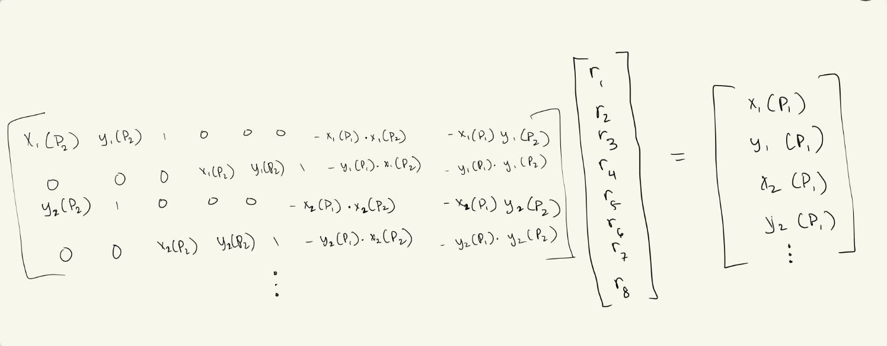
In the above picture, P2 are the set of points part of the image that we transform to look like
it's in the perspective of the other image. P1 are the points in this other image. Each point in P2
corresponds to a point in P1. Thus, the notation in the image works as follows: X1(P2) means we want the
x-value of the 1-indexed point in P2.
We use the "r" values above to construct the homography matrix H. Applying H to the image of P2 will
transform it to look like it's in the perspective of P1.
To make rectified image, we apply the homography matrix to 4 points selected in an image (the points "P2"). However, unlike in warped images, the P1 points don't correspond to points in another image. Rather, they are points that form a rectangle. This means that the homography matrix will map the part of the image specified by P2 points and "rectify" that part of the image.
Picture of the view outside my apartment (taken from balcony), and then the rectification of an exterior wall of a building in my view.
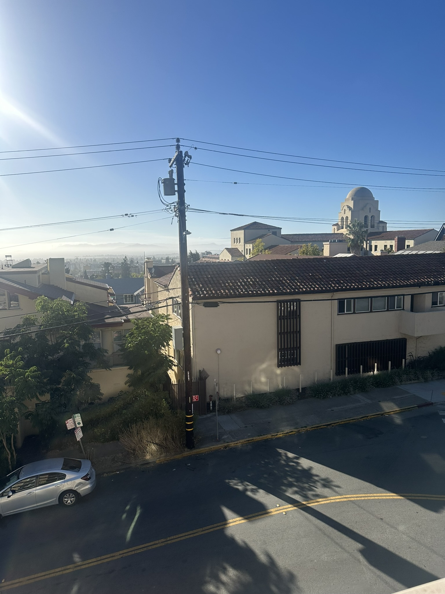Stock photo of a room, with the rectification of the mirror.
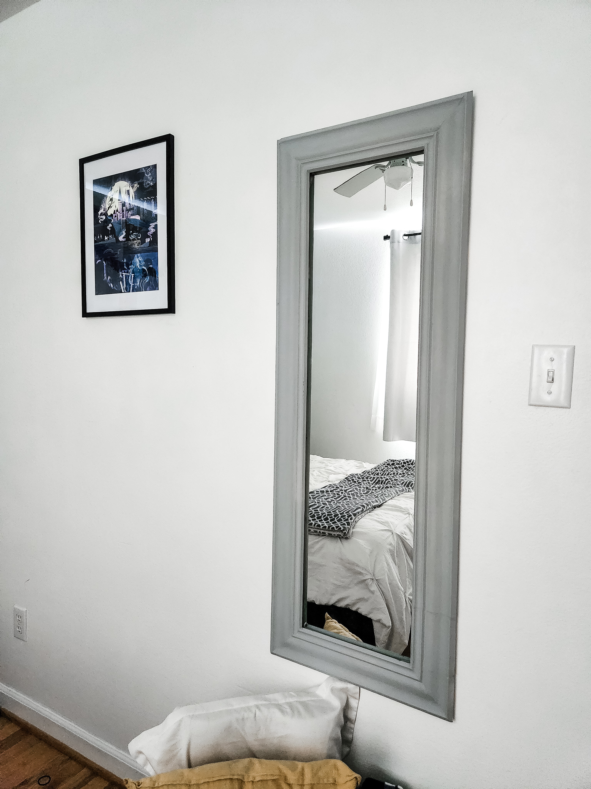
Here, we completed the process outlined at the start of the project, selecting sets of corresponding
points between two images and warping one image into the perspective of the other. This produces
a panoramic-like image.
For pixels of the resulting image that have overlap between both the images, we take the average pixel value.
While this works fine to a certain degree, the resulting image is not very smooth. A point of improvement
would be to use other techniques, like a weighted average or a Laplacian pyramid, to make the transition
much smoother.
Here are the original two images:
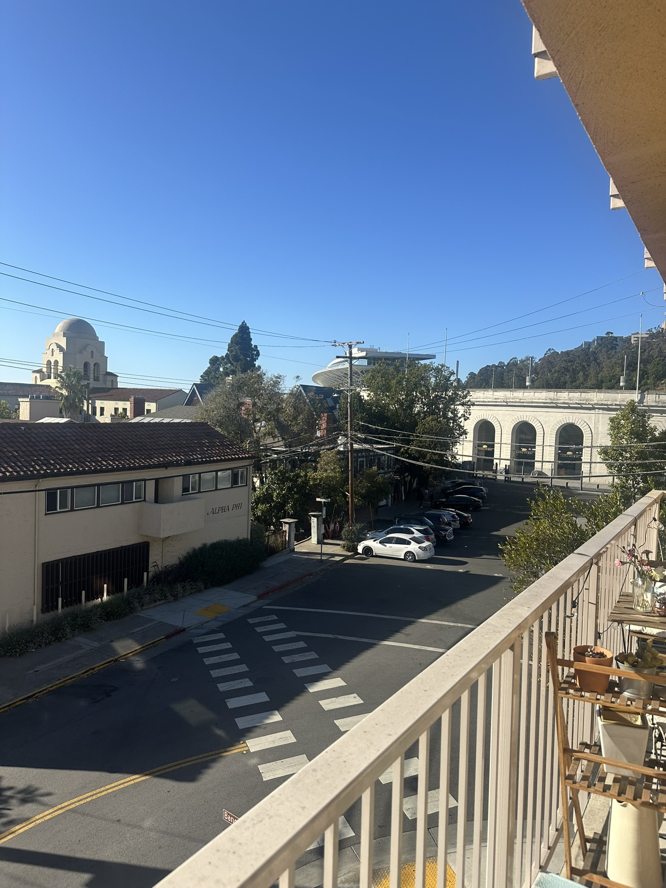Here is the warped image:
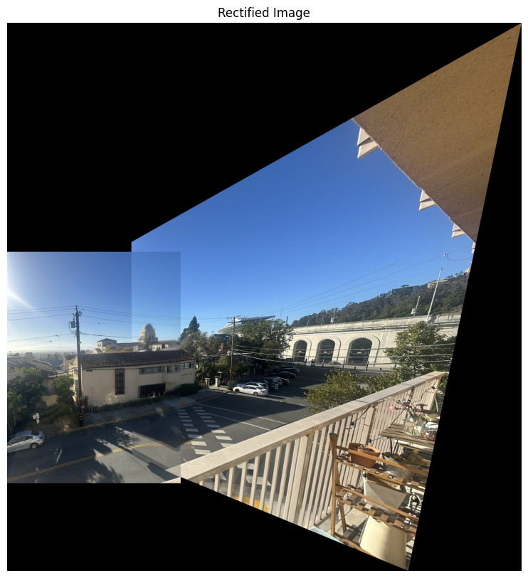Here are the original two images:
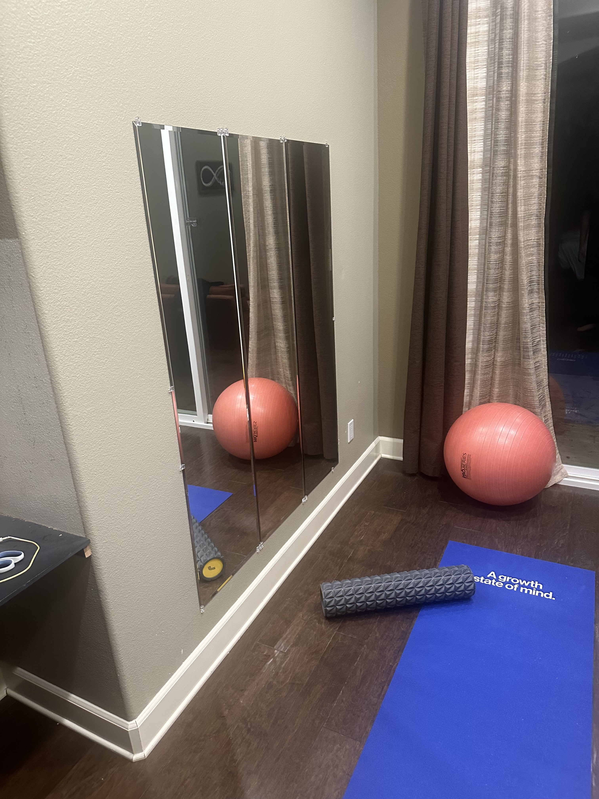 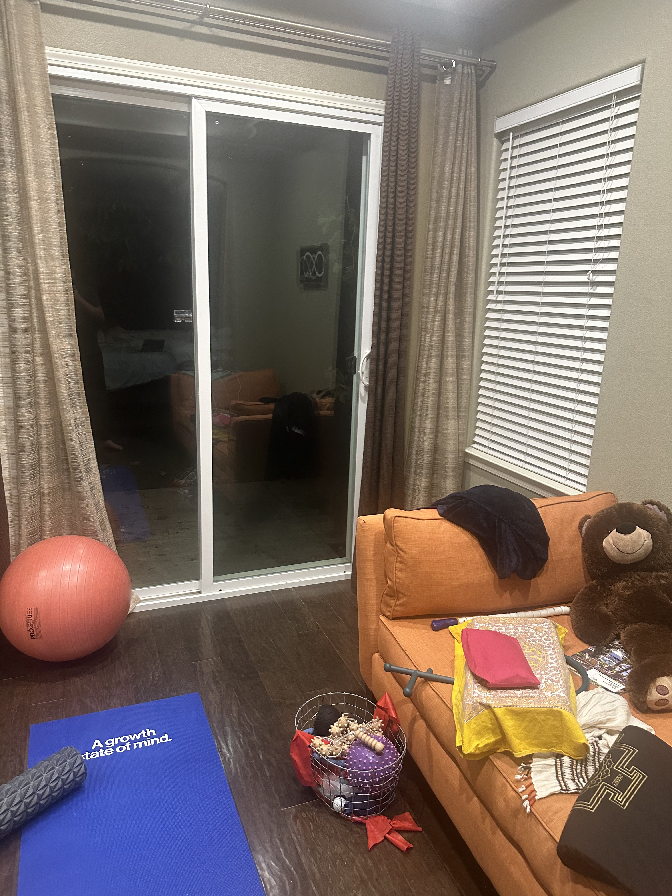Here is the warped image:
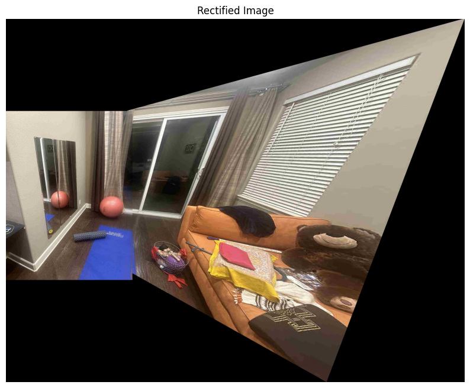Here are the original two images:
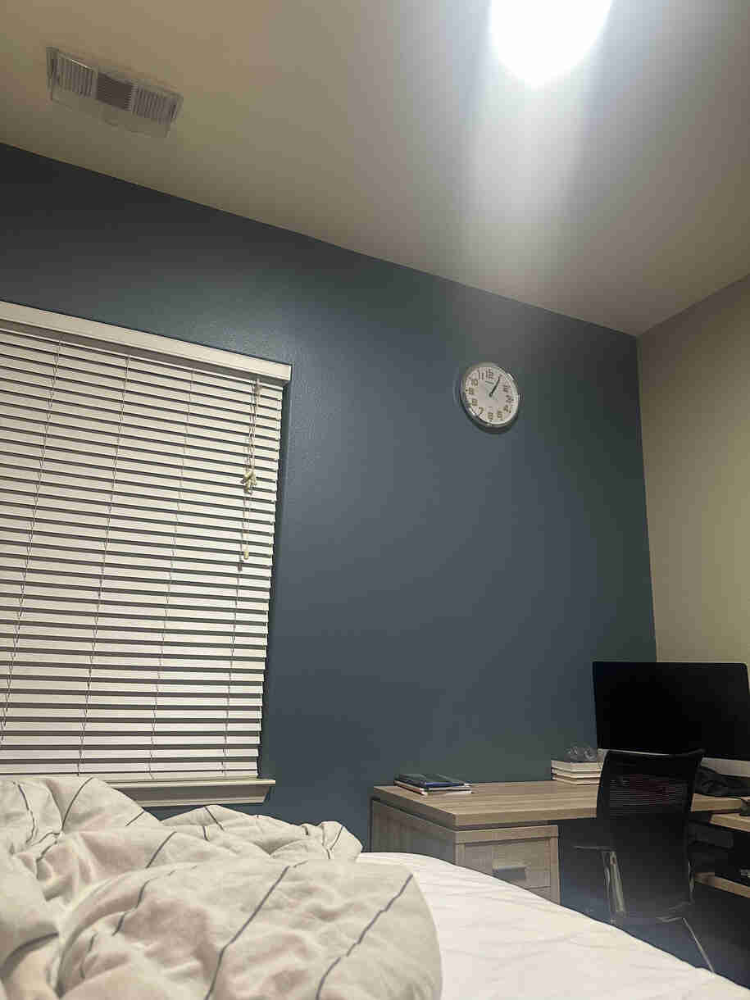 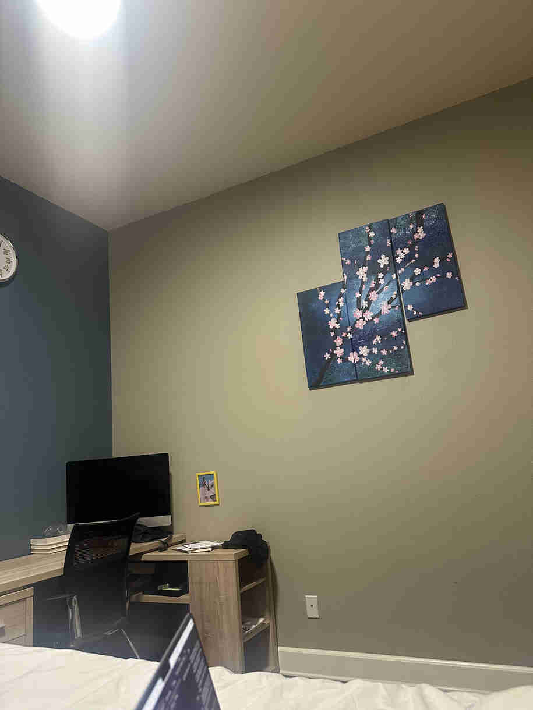Here is the warped image:
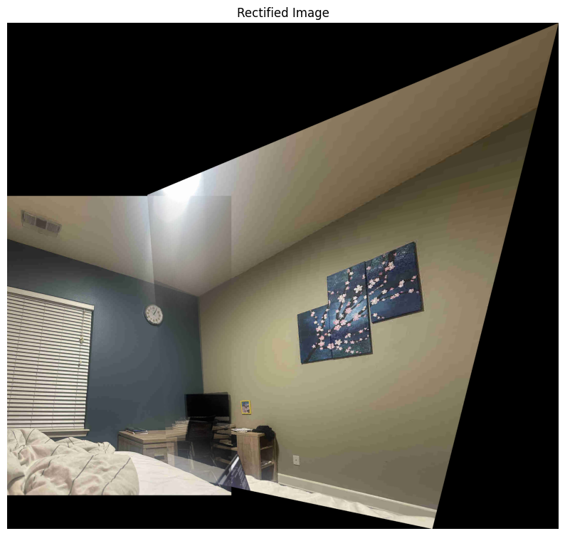